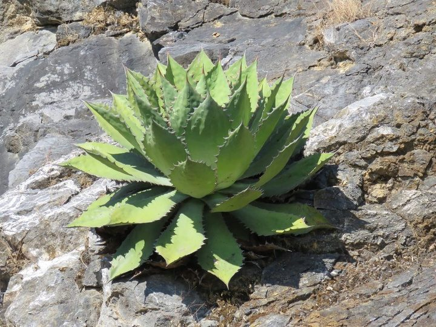
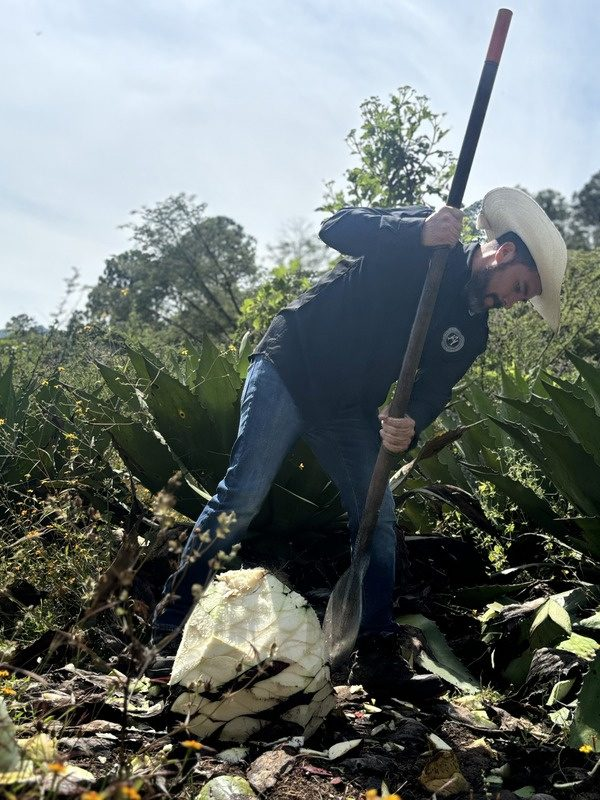

Un mezcal de agave cupreata que, después de destilado, se guarda 14 meses enterrado en barril de vidrio. Lo elabora la familia Álvarez en Túmbisca, Michoacán, con un oficio que se hereda desde 1818: horno de piedra, tahona y alambique.
La botella
en cifras

Agave cupreata
Es el agave de la casa: la mayor parte de lo que destila Hermanos Alvarez nace de él. Crece en las laderas de la sierra michoacana, se cosecha maduro y a mano, y es el que da a este mezcal su denominación de origen Michoacán.
¿Qué significa?
La parte del mezcal que es alcohol. Con 48%, una botella de 750 ml tiene unos 360 ml de alcohol.
Las levaduras naturales convierten los azúcares del agave cocido en alcohol; el alambique lo separa y lo concentra.
Cuerpo, calidez y vehículo para los aromas. Se disfruta a sorbos pequeños, dejando que se abra en la boca.
¿Qué significa?
Un reposo después de destilar. El mezcal se guarda en barril de vidrio enterrado durante 14 meses antes de embotellarse.
Bajo tierra hay oscuridad y una temperatura estable. El vidrio es inerte: no le cede color ni sabor, solo le da tiempo.
El mezcal se asienta y se integra: queda redondo, cálido y persistente, sin perder el carácter del agave ni su transparencia.
La barrica de roble tiñe el reposado de amarillo y le da vainilla y madera. El vidrio deja el mezcal transparente.
Cómo se
hace
El cobre canta, la leña transforma y la magia comienza.
Nota
de cata
¿Cuánto sabes
de este mezcal?
Hecho en
Túmbisca

Humberto Álvarez Rojas
Elabora el mezcal en Túmbisca, municipio de Morelia, Michoacán, con los procesos tradicionales que su familia ha mantenido por generaciones.